DANA already offered many wallet capabilities: add cards, buy
vouchers, track loyalty, and access other financial features. The
opportunity was not adding more features.
It was making the experience feel like one product: one mental
model, one set of interaction rules, and one predictable place to
manage wallet inventory.
Opportunity statement: Unify the wallet into a
cohesive hub so users can manage and choose payment options
without having to learn a new flow every time.
The Core Problem: Disjointed Flows
Even inside the wallet area, patterns were inconsistent: different
layouts and visual hierarchy per feature (cards vs vouchers vs
loyalty), different labeling conventions, and different navigation
depth and entry points.
What users experienced:
Instead of a single wallet, it felt like jumping between mini
apps. Users spent effort figuring out where things are before
doing the task.
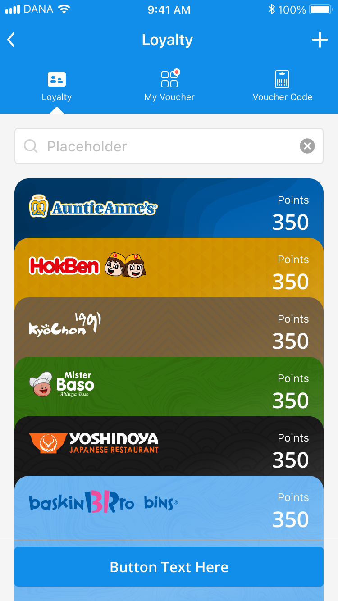
Card Management
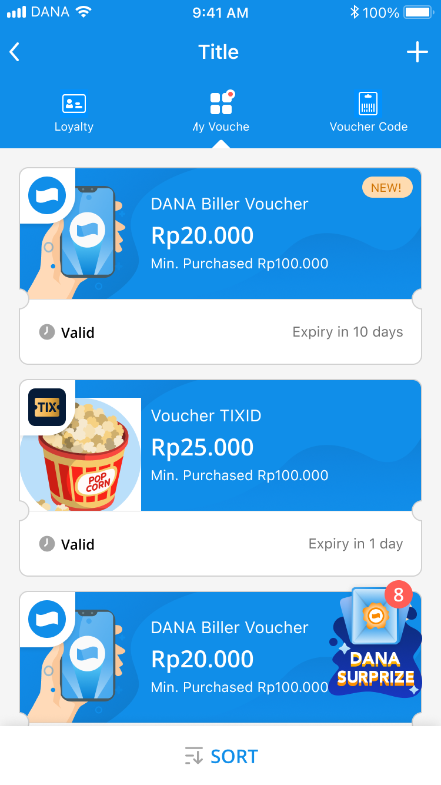
Pocket - Voucher
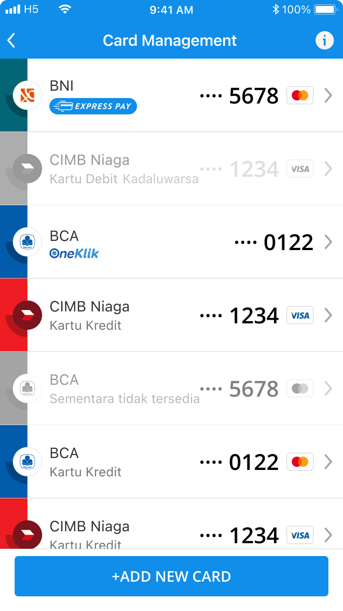
Pocket - Loyalty
Why it matters:
Wallet actions happen close to payments. Confusion here increases
hesitation, errors, and drop-offs.
The Evolution
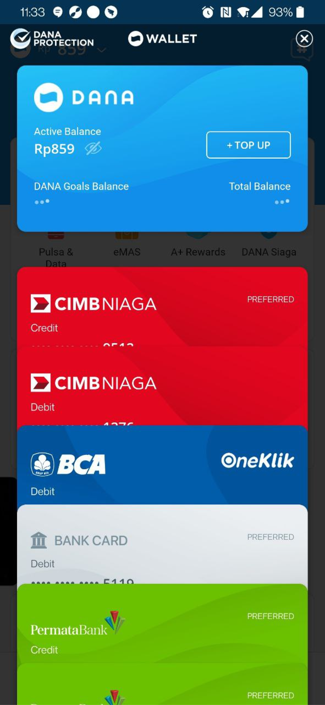
Wallet v1
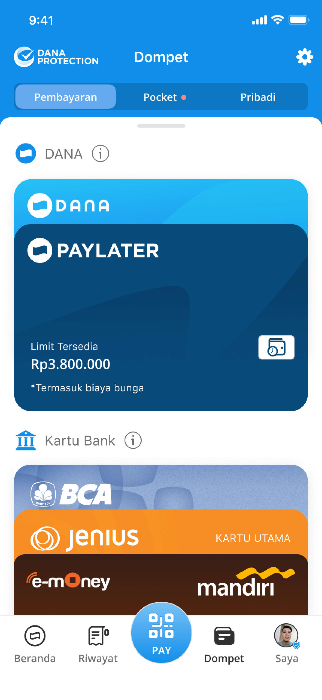
Wallet v2Wallet v3
V1 - Wallet as a list
The earliest experience functioned like a stacked list of
payment methods. It was straightforward, but scanning and
management did not scale once users had many cards and
products.
What worked: Everything visible in one list.
What did not: Low structure, hard to
prioritize, management felt manual.
V2 - Structure begins
V2 introduced clearer modules (balance, PayLater, cards). This
improved hierarchy and reduced the pile-of-items feeling.
What worked: Stronger grouping and hierarchy.
What did not: It still felt fragmented,
users had to remember where each feature lived and how it
behaved.
V3 - Wallet becomes a hub (+ SmartPay)
V3 brings wallet inventory into a unified hub: clearer grouping,
better scan, and a more consistent pattern language across cards
and wallet products. Search supports fast access, and SmartPay
helps reduce repetitive reordering.
Key shift: From "storage page" to "system that helps me
pay".
Goals
Unify patterns so DANA Wallet feels like one cohesive system.
Improve scanability for users with multiple cards and products.
Create a scalable structure that supports future wallet products
without new entry-point chaos.
Maintain trust and control, especially for SmartPay behavior.
Exploration
To unify the wallet, I explored different structures and control
models.
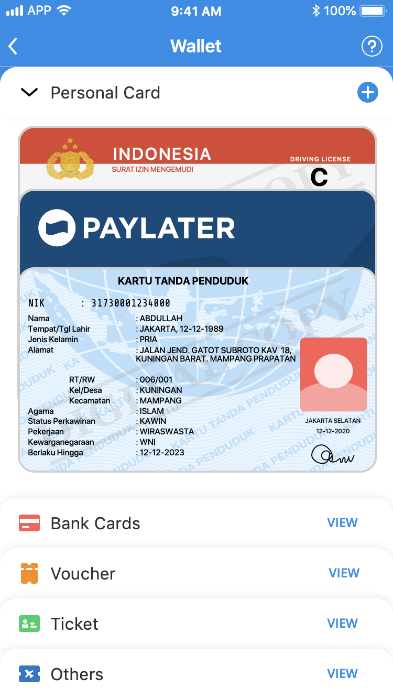
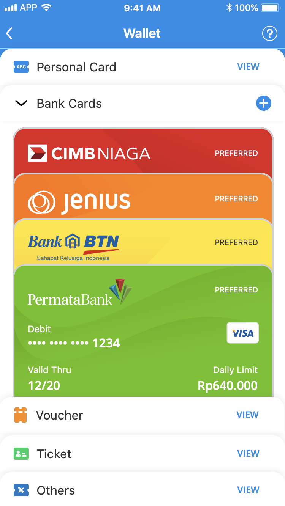
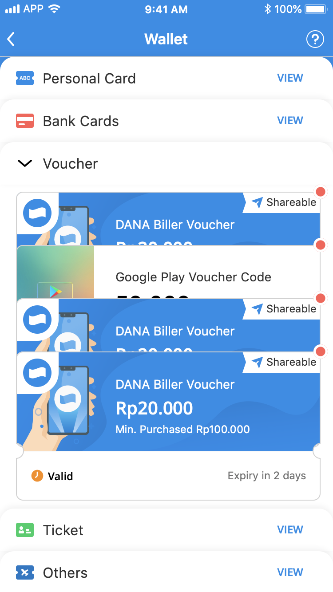
First iteration: assets were grouped in small pockets and
users had to open each pocket to see details.
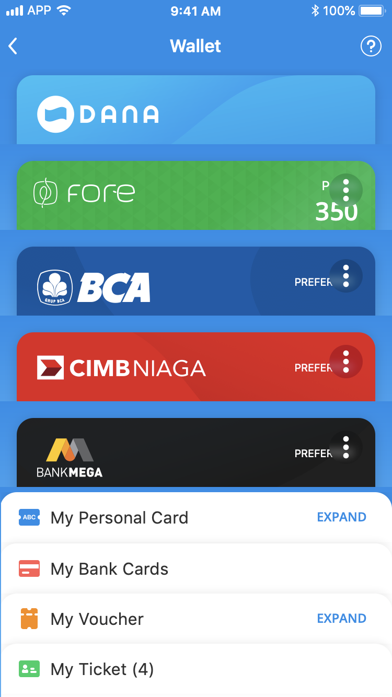
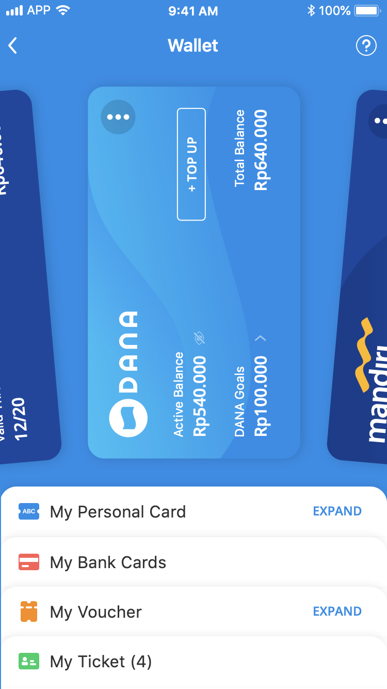
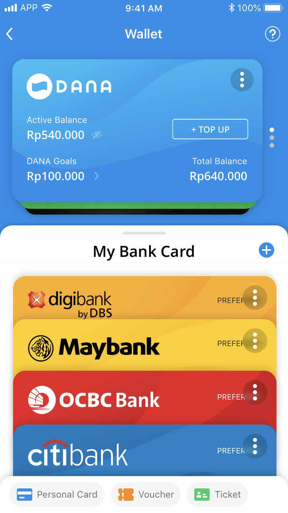
Second iteration: highlighted favorite assets in the upper area
to help users prioritize what matters most.
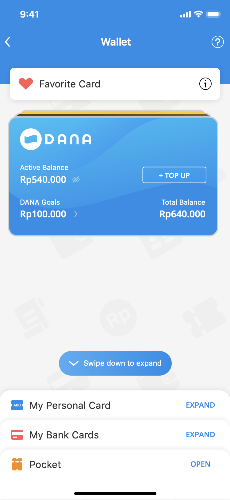
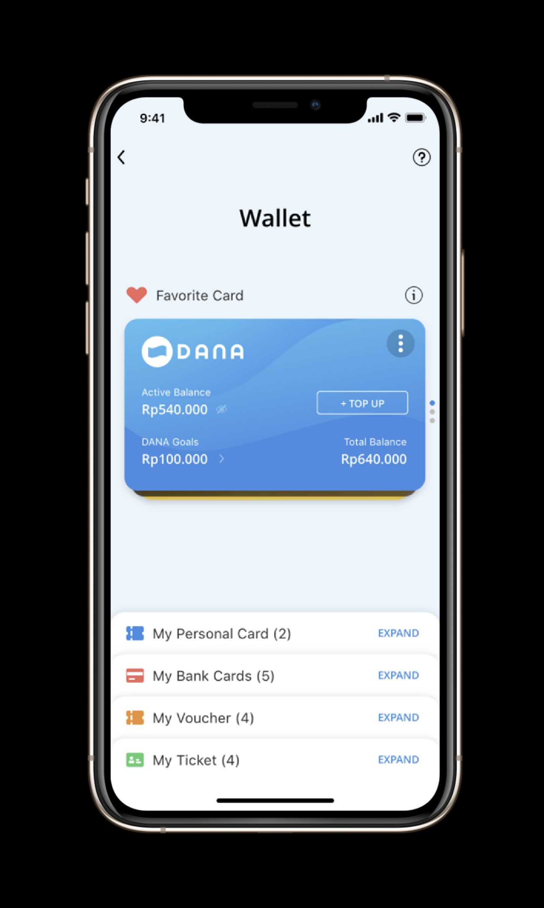
Third iteration: toned down color intensity and polished the
favorite cards concept to feel clearer and calmer.
What Research Revealed?
Insight collected from Wallet v2 survey and usability testing,
digital wallet attitudes research, and Wallet v3 usability
testing conducted by UX Researchers.
Wallet v2 Research
Survey + Usability Test
951 Respondents
5 Participants
Establishing baseline behaviour and discoverability issues.
Digital Wallet Attitudes
Survey + in-depth interviews
1104 Respondents
6 Participants
Explored what users expect from digital wallet.
Wallet v3 Usability Test
UT & Concept Validation
6 Participants
Validated the redesigned wallet experience.
What we learned
Wallet = Assets, not only payments
Users associated wallet with DANA Balance, bank card,
savings, PayLater, investment, identity cards, and member
cards.
Design Implication =Treat wallet as one unified asset system.
Categories need explicit labels
Voucher, loyalty, ticket, and ID-card categories were not
always obvious. Users often relied on brand visuals rather
than clear category cues.
Design Implication =
Adding a title in each pocket section with how much there
is.
Adoption need trust
Users wanted one digital place for essentials, but still
relied on physical wallets for acceptance, connection, and
security backup. 86% were interested in adopting and 88%
felt secure yet trust concern remained.
Design Implication =
Communicate security, trust, and reliability clearly.
Control must match expectations
Users expected add asset, search, payment settings, and
ID-card actions to behave predictably. Confusion appeared
when action placement or wording broke mental models.
Design Implication =Make actions obvious and behaviourally consistent.
Final Solution
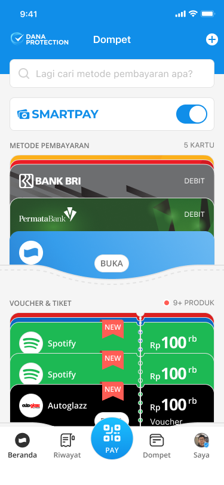
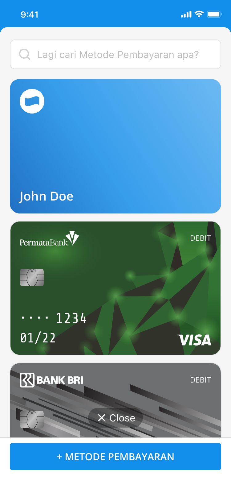
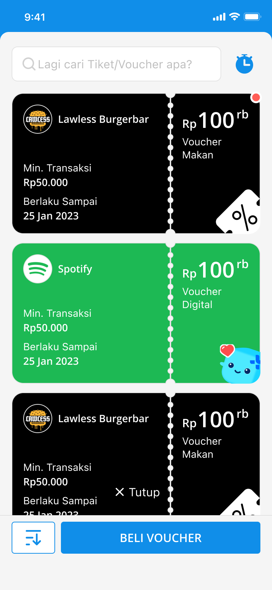
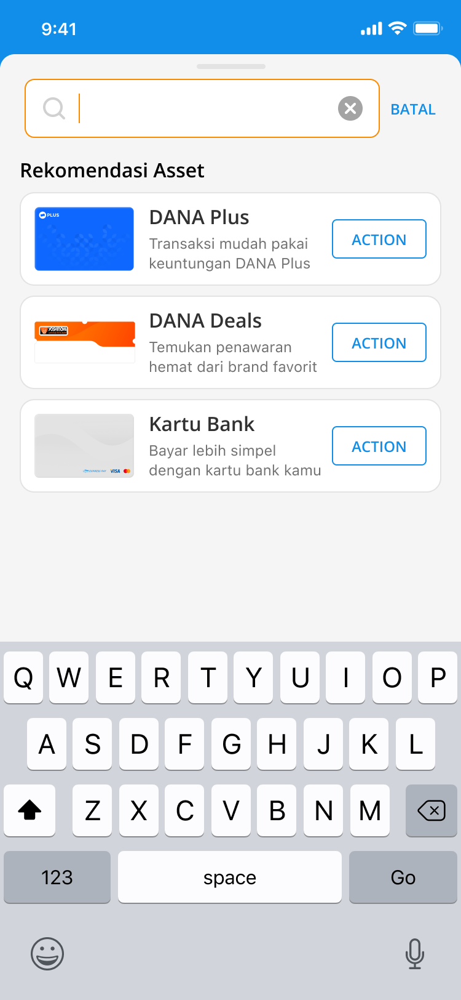
Make "Payment Methods" the anchor
Cards are high-frequency and trust-sensitive, so the
wallet starts from how users pay.
Progressive disclosure
Users see what matters now, then drill down for detail:
Top-level modules show key status and info.
Management actions are one step deeper.
Reduce search confusion
Instead of separate search behavior per feature, the hub
uses a consistent model:
Search payment methods when adding.
Search vouchers and tickets when browsing.
Clear category framing avoids context mismatch.
Strong consistency in UI patterns
Same card style rules, spacing, section headers, and CTA
placement across cards, vouchers, loyalty, and investment. So
it feels like one product.
Reflection & Impact
Total User Increase
53,8%
Unique User Increase
42,4%
This project reinforced a key fintech lesson for me: When
products deal with money, the UI’s job is not only usability. It’s
also trust, clarity, and control. A wallet isn’t just a feature
list, it’s a system that must feel stable and predictable. DANA
had cards, vouchers, loyalty, and investment—but the experience
was fragmented across different entry points and inconsistent
patterns. I redesigned DANA Wallet into a unified Financial Hub
by restructuring the information architecture, creating modular
summary sections, and standardizing interaction patterns so users
get a clear overview and a predictable way to manage everything
in one place.